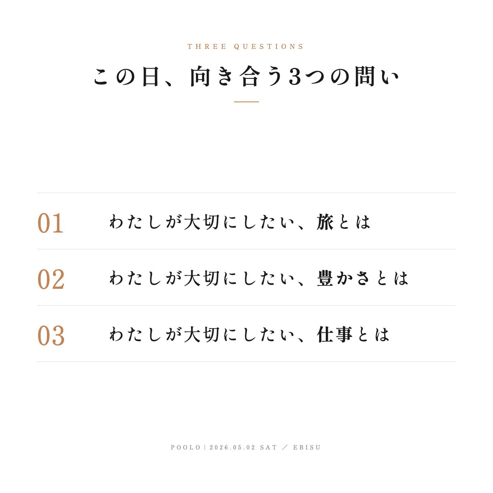
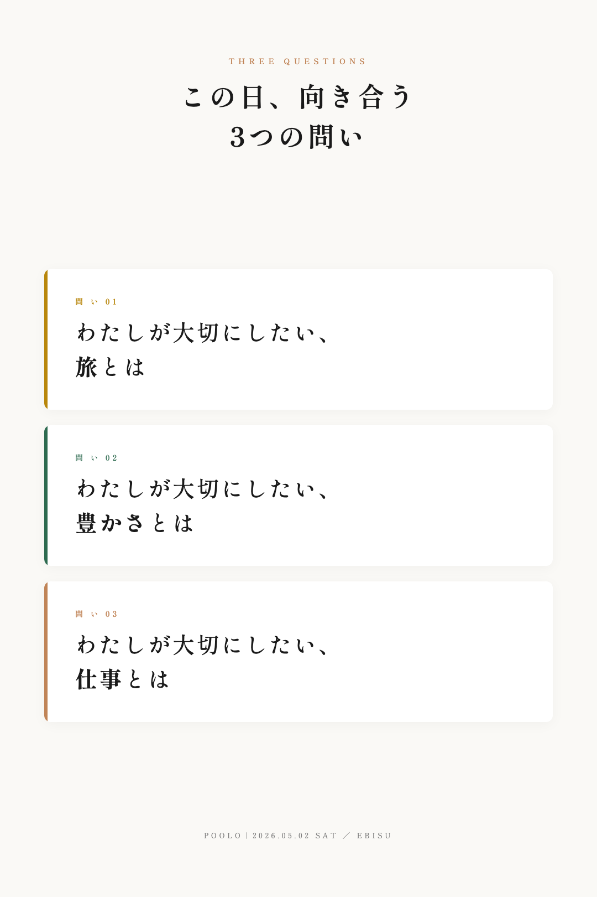
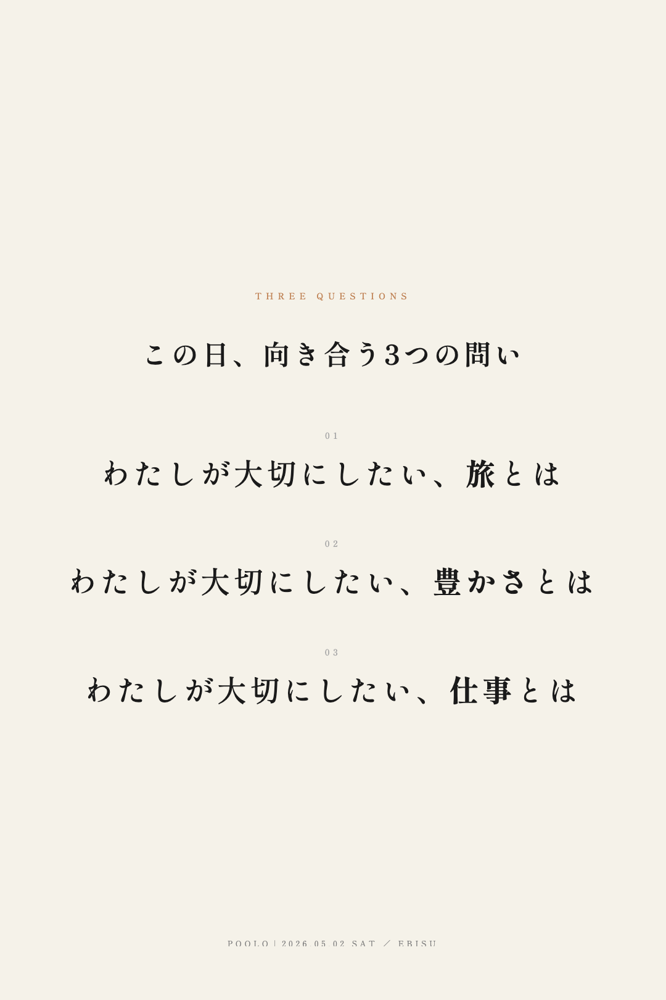

前回の横長1600×900版はスマホで文字が小さく見えたため、
縦長・正方形比率で各問いの文字を絶対サイズで大きくした改訂版。
前回v1の構造を維持しつつ、正方形に再構成。各行に「番号 ＋ 問い本文」の2要素だけ配置し、時間表示は削除。SNS（X/Instagram）のスクエア投稿にもそのまま使える比率。

Instagram縦長比率（2:3）。各問いをそれぞれ独立したカードとして配置し、左に問いの色アクセント（金／緑／オレンジ）。視線の流れが明確で、カードごとの読みやすさが高い。

装飾・カード・罫線すべて排除し、問い本文を最も大きく見せるミニマル構成。クリーム背景で余白を広く取り、静謐なPOOLOトーンを最も強く体現。情緒派・感性派向け。
